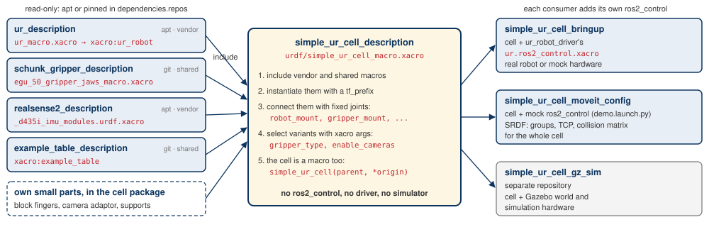

layout: true <div class="header"><img src="../../../common/logo/ros_industrial_logo.png" alt="ROS-Industrial" style="background-color:transparent"/></div> <div class="footer"><img src="https://www.ipa.fraunhofer.de/content/dam/ipa/ipa.svg" /><p>© Fraunhofer IPA</p></div> <div class="triangle"></div> --- class: center, middle name: main_title # STRUCTURING A MANIPULATION WORKSPACE ### Vendor packages, cell packages, and how to compose them Goal: reuse vendor robots and shared tools in several robot cells, without editing vendor packages or copying models. Examples: the workshop cells `simple_ur_cell`, `dual_fr3_cell`, `agx_piper_h`, `motoman_gp50` --- class: dense ## What robot vendors ship | Package | Source | Shape | Contents | |---|---|---|---| | `ur_description`, `ur_robot_driver`, `ur_moveit_config` | apt, Universal Robots | separate packages | `ur_robot` macro and meshes; driver, `ur.ros2_control.xacro`, `ur_control.launch.py`; MoveIt config for the bare arm | | `franka_description` | git, Franka Robotics | description only | arm and hand macros; driver and MoveIt config are in `franka_ros2` | | `agx_arm_urdf` | git, AgileX | **one package, several robots** | Piper variants and Nero, each bare, with gripper or with Revo2 hand: URDF/xacro and meshes, no MoveIt config | | `motoman_gp50_support` | git, Yaskawa | ROS-Industrial `_support` package | `gp50_macro.xacro`, meshes, a view launch file | <br/> - There is no common shape: everything in one package, separate packages, or a description only - **Do not restructure or edit vendor packages.** Install them with apt when they are released, otherwise pin a version in a `.repos` file (`vcs import src < dependencies.repos`) - Fork only to fix a bug, and send the fix upstream --- class: dense ## Reuse from the vendor, or write it yourself? | Vendor part | In a cell | Example: `simple_ur_cell` | |---|---|---| | xacro macro + meshes | **Reuse**: include and instantiate | `simple_ur_cell_macro.xacro` includes `ur_macro.xacro` and calls `xacro:ur_robot parent="robot_mount"` | | Driver, hardware plugin, `ros2_control` tags | **Reuse** | `simple_ur_cell_controlled.urdf.xacro` = cell xacro + `ur_robot_driver`'s `ur.ros2_control.xacro` | | Bringup launch file | **Reuse** if it accepts your URDF, otherwise write a cell bringup | `start_cell.launch.py` includes `ur_control.launch.py` with `description_launchfile` set to the cell's `rsp.launch.py` | | MoveIt config | **Write your own** for the cell | The vendor one is for the bare arm: no gripper, table or cameras, wrong TCP and collision matrix. `simple_ur_cell_moveit_config` comes from the Setup Assistant, run on the cell URDF | <br/> - When the vendor model already **is** the whole robot (arm + gripper, nothing else in the cell), you can skip the cell description package: `agx_piper_h_moveit_config` includes `agx_arm_urdf`'s `piper_h_with_gripper_description.xacro` directly - No macro, or a hard-coded `world` link? Wrap the vendor URDF in a macro inside your cell package --- class: dense, small-code ## Workspace layout .cols[ .fifty[ ```text ros2_ws/src/ ├── simple_ur_cell/ # one repository per cell │ ├── simple_ur_cell_description/ # cell macro + small own parts │ ├── simple_ur_cell_bringup/ # real / mock hardware, no MoveIt │ ├── simple_ur_cell_moveit_config/ │ ├── dependencies.repos # pins the git dependencies │ └── docker/ ├── dual_fr3_cell/ │ ├── dual_fr3_cell_description/ │ ├── dual_fr3_cell_bringup/ │ ├── dual_fr3_cell_moveit_config/ │ └── dependencies.repos ├── example_table_description/ # shared by both cells ├── schunk_gripper_description/ # shared ├── franka_description/ # vendor: pinned, read-only └── applications/ └── pick_and_place/ # apt: ur_description, ur_robot_driver, # realsense2_description, moveit, ... ``` ] .fifty[ - **Vendor packages:** apt or pinned in `dependencies.repos`. Never edit them - **Own small parts** (fingers, adaptors, camera supports) stay in the cell description package. Move a part to its own package when a **second cell** needs it: `example_table_description`, `schunk_gripper_description` - **Simulation** can live in a separate repository: `simple_ur_cell_gz_sim` - **Dependencies point down**: applications → bringup / MoveIt config → cell description → component descriptions. A gripper description knows nothing about the robot or cell it is mounted on | Suffix | Contents | |---|---| | `_description` | URDF/xacro, meshes | | `_support` | ROS-Industrial: description + config | | `_bringup` | Launch files, controller config | | `_moveit_config` | SRDF, kinematics, limits | | `_driver`, `_hardware` | Driver, `ros2_control` plugin | | `_interfaces` | Messages, services, actions | ] ] --- class: dense, small-code ## Composing a cell <p></p> - Swapping the gripper is a xacro argument (`gripper_type:=egu50|egp64|white_vacuum`): no vendor package changes - One cell xacro, three consumers. Each adds the `ros2_control` tags it needs: real or mock UR driver, MoveIt mock hardware, Gazebo. The SRDF must match: a part added with a xacro argument (e.g. the tool changer) needs its collision pairs too --- class: dense ## URDF or planning environment? | Object | Representation | Why | |---|---|---| | Robot arm, gripper, robot-mounted camera | Cell URDF | Moves with the robot: needs TF and self-collision checks | | Robot pedestal, mounting plate | Cell URDF | Rigidly attached to the robot | | Table, safety fence, fixed fixture | Cell URDF (fixed joint) **or** collision object in the planning environment + simulation world | Never moves. URDF: always present and in TF. Environment: easy to change per job | | Graspable workpiece | Collision object added at runtime + simulation model | Pose comes from perception and changes every cycle | | Grasped workpiece | Collision object **attached** to the gripper link | Moves with the gripper; contact with the fingers must be allowed | <br/> - **Keep movable workpieces out of the URDF**: it is loaded once at startup. Add, move, attach and remove them at runtime through the planner's environment - A shared description package can provide the geometry for both: a xacro macro for the cell URDF (`example_table_description`), and meshes for collision objects and the Gazebo world .note[Same concepts, different names: MoveIt uses the planning scene, collision objects and attached objects; Tesseract uses environment commands to add, move and re-parent links and to change the allowed collision matrix.]